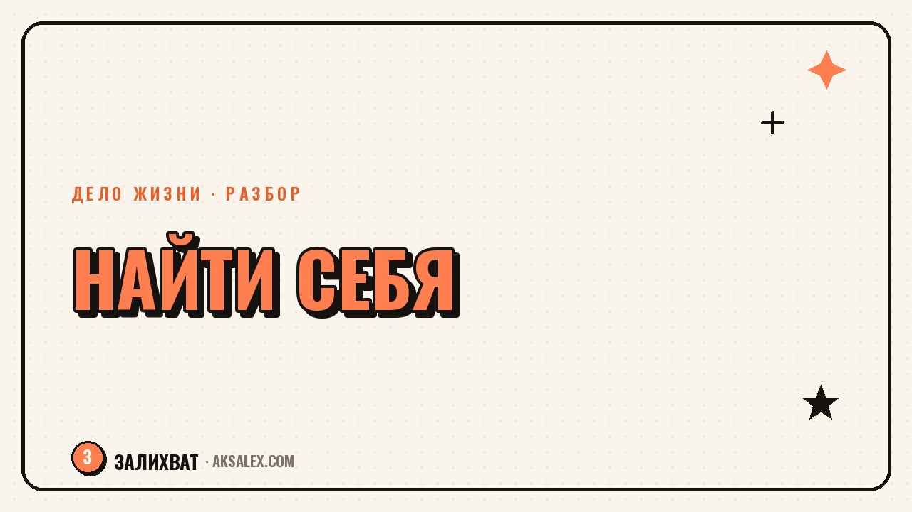

Как найти себя в профессии, если работа не своя

Утро понедельника, а внутри уже глухое сопротивление. Ты справляешься с задачами, коллеги считают тебя надёжным, но радости от работы давно нет. Вопрос «как найти себя в профессии» обычно всплывает именно в такой момент - и первое, что важно сделать, это не бежать увольняться, а разобраться, что именно разонравилось: сама профессия, конкретная компания или способ, которым ты в ней работаешь.
Профессия не та или работа не та: как отличить
Это разные проблемы, и решаются они по-разному. Если тебе не нравится сама суть деятельности - например, ты юрист, но тебя выматывает не конкретный работодатель, а сам характер работы с конфликтами и документами - смена компании ничего не изменит. А если проблема в токсичном коллективе, переработках или отсутствии роста именно на этом месте, при этом сама профессия по-прежнему откликается - решение может быть намного проще, чем полная смена курса.
Проверить это можно через простое упражнение: вспомни последние два-три года и выпиши моменты на работе, когда тебе было по-настоящему интересно или спокойно. Если такие моменты были, но случались редко и в основном вопреки обстоятельствам - дело, скорее всего, в условиях. Если вспомнить почти нечего, даже в лучшие периоды - вопрос глубже, и правда в самой профессии.
Вопросы, которые помогают разделить эти два случая
- Что именно вызывает отторжение - задачи, люди, темп или результат труда
- Было ли на этой же должности время, когда тебе нравилось - и что тогда было по-другому
- Если убрать конкретных коллег и начальника, останется ли работа терпимой
- Что ты делаешь в свободное время без всякой оплаты - это часто подсказка о сути, а не о форме
| Признак | Дело в работе | Дело в профессии |
|---|---|---|
| Смена коллектива | Становится заметно легче | Проблема повторяется на новом месте |
| Отпуск и отдых | Желание вернуться к задачам есть | Даже думать о возвращении тяжело |
| Любимые моменты | Есть, но редко, из-за обстоятельств | Их почти нет за всё время в профессии |
| Свободное время | Тянет к смежным задачам той же сферы | Тянет в совсем другую область |
Почему разонравившаяся работа - это не всегда сигнал всё бросить
Есть соблазн воспринять усталость от работы как знак немедленно менять профессию целиком. На деле часть выгорания снимается куда более скромными шагами: сменой отдела внутри той же компании, пересмотром нагрузки, коротким отпуском, честным разговором с руководителем о зоне ответственности.
Резкая смена профессии - решение с высокой ценой: потеря дохода на время переобучения, необходимость заново выстраивать репутацию, риск обнаружить те же самые проблемы на новом месте, потому что причина была не в профессии, а в твоём отношении к работе вообще. Поэтому прежде чем менять курс, стоит хотя бы попробовать более дешёвые эксперименты.
Не всякая усталость от работы - это призвание постучаться в другую дверь. Иногда это просто сигнал, что дверь, в которой ты стоишь, нужно приоткрыть по-другому.
Как искать своё, если ты внутри рутины и не видишь альтернатив
Один из рабочих способов - не пытаться придумать идеальную профессию с нуля, сидя в голове, а начать с маленьких проб вне основной работы. Пройди бесплатный вводный курс в смежной области, возьми небольшой проект на фрилансе выходного дня, поговори с человеком, который уже работает там, куда тебя тянет - и спроси не про зарплату, а про будничный день.
Формат проб по шагам
- Выбери направление, которое давно кажется интересным, но кажется «не для тебя»
- Найди минимальный бесплатный или недорогой способ попробовать его - курс, волонтёрство, разовый заказ
- Дай себе одну-две недели на пробу, не бросая основную работу
- Зафиксируй честно: стало интереснее или это оказалось романтизацией со стороны
- Повтори с другим направлением, если первое не откликнулось - это нормальный процесс, а не провал
Важно не искать один-единственный правильный ответ с первой попытки. Люди, которые в итоге нашли устраивающее их дело, в подавляющем большинстве прошли через несколько проб, часть из которых оказалась мимо. Ощущение, что все вокруг сразу знали своё призвание, а ты один блуждаешь - искажение, а не факт.
Роль нейросетей в этом поиске
Нейросеть не скажет тебе, в чём твоё призвание - это не её задача и не её компетенция. Зато она хорошо работает как инструмент для структурирования собственных мыслей: можно описать в чате свой опыт, интересы и опасения и попросить задать уточняющие вопросы, которые помогут сформулировать то, что крутится в голове разрозненно.
Ещё нейросеть полезна на этапе разведки: она быстро соберёт список смежных профессий под твой набор навыков, объяснит, чем реально занимается человек на незнакомой должности, поможет составить план обучения по новому направлению. Это экономит время на предварительном исследовании, но финальное решение и ощущение «моё - не моё» остаются только за тобой.
Когда стоит обратиться за помощью, а не разбираться в одиночку
Если ощущение бессмысленности работы держится месяцами, сопровождается постоянной тревогой, нарушениями сна или апатией, которая переходит и на жизнь вне работы - это уже не только вопрос профориентации, и стоит поговорить с психологом или психотерапевтом, а не пытаться решить всё карьерным консультированием. Профориентационные упражнения хорошо работают там, где база устойчива, а вопрос именно в выборе направления.
Карьерный консультант или коуч может быть полезен на этапе структурирования вариантов и составления плана, но выбирай специалиста осторожно: спроси про опыт, почитай отзывы, не доверяй обещаниям гарантированного результата за один сеанс. Поиск себя - процесс, а не разовая консультация, и это нормально, что он занимает время.
Частые вопросы
Как найти себя в профессии, если текущая работа не твоя
Сначала раздели, в чём именно проблема - в самой профессии, в компании или в конкретных условиях работы. Дальше попробуй небольшие эксперименты в интересном направлении, не бросая основную работу, и посмотри, что из этого откликается на практике, а не в фантазии.
Стоит ли сразу увольняться, если работа разонравилась
Не обязательно и чаще всего не стоит - резкое увольнение без плана увеличивает стресс и финансовый риск. Разумнее сначала протестировать альтернативу небольшими шагами и накопить подушку безопасности на время возможного перехода.
Как понять, в чём моё призвание
Универсального теста не существует, но полезно смотреть, чем ты занимаешься добровольно и без оплаты, что вызывает у тебя интерес без внешнего давления. Призвание чаще проявляется через серию проб, а не через одно озарение.
Может ли нейросеть помочь найти своё призвание
Нейросеть не определит призвание за тебя, но может помочь структурировать мысли, задать уточняющие вопросы и быстро собрать информацию о смежных профессиях. Итоговое решение и ощущение отклика остаются задачей человека, а не инструмента.
Когда усталость от работы - повод обратиться к психологу
Если апатия, тревога или бессмысленность держатся месяцами и затрагивают не только работу, но и остальную жизнь, это повод обратиться к специалисту, а не только к карьерному консультанту. Профориентационные техники работают там, где эмоциональное состояние стабильно и речь именно о выборе направления.
Раз тема оказалась полезной, вот что почитать следующим. Как нейросеть собирает презентацию из текста и какой сервис выбрать под свою задачу.
Читать статью →а не вручную